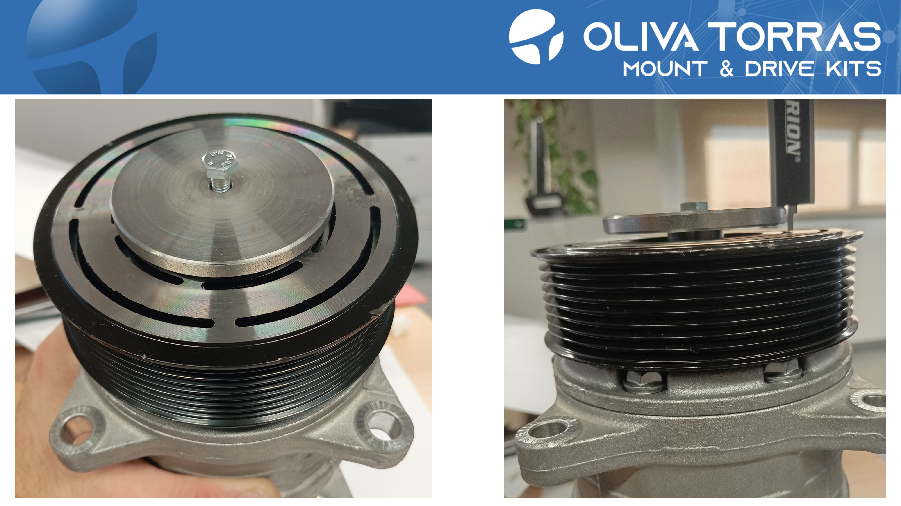

Calculadora online — Plato · Embrague · Calibrado
PRIMER PASO — Medida Plato

Media: —
SEGUNDO PASO — Medida Embrague

Media: —
TERCER PASO — Calibrado Tool
Media: —
Resultado final
Grosor necesario para el correcto galgado de 0.4mm +/-0.1
RESUMEN MEDIDAS
Medida Plato: —
Medida Embrague: —
Calibrado Tool: —
Grosor necesario: —
Los inputs aceptan coma o punto como separador decimal. Se formatean a 2 decimales al mostrar.
Instrucciones para añadir la tercera imagen (Calibrado):
- Sube tu archivo de imagen al repositorio y nómbralo exactamente
Calibrado-tool.jpg(o modifica el atributosrcen la etiqueta <img> si prefieres otro nombre). - Asegúrate de que
index.htmly los tres archivos.jpgestén en la misma carpeta (por ejemplo, en la raíz del repo) antes de activar GitHub Pages. - Para publicar: ve a la configuración del repositorio → Pages → selecciona la rama principal y la carpeta raíz (root) → guardar. En unos segundos estará accesible en
https://tu-usuario.github.io/tu-repo/